Gallery
Drafted with AI, not yet reviewed
Everything here is rendered by keycap’s preview when the site is built. Each model is a script that you can download and open in Emacs.
marks a port of one of my OpenSCAD designs; its page links to the original.
Examples
The examples that come with keycap, most of them ports of my general designs.

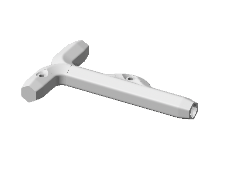
allen-key-handleT-handle for a bent Allen key: a hexagonal bar whose halves curve into the stem, a screw through the bar and one through a loop in the stem.
by Rei

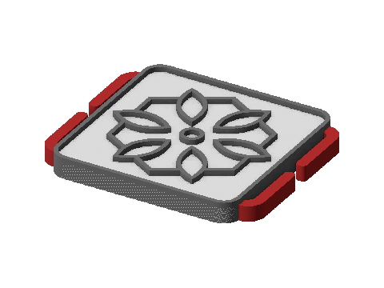
badgePin badge and the bracket that holds it on a strap, its artwork, six petals in a hexagon, imported from SVG files.
by keycap

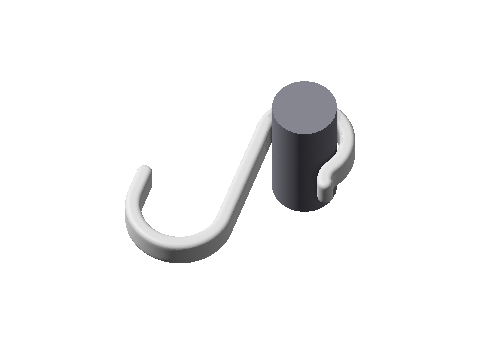
bar-hookBar hook: an S-hook that hangs over a round or square bar, such as a wardrobe rail or a towel bar, with a lip that snaps over the bar and a lower hook for bags or hangers.
by keycap

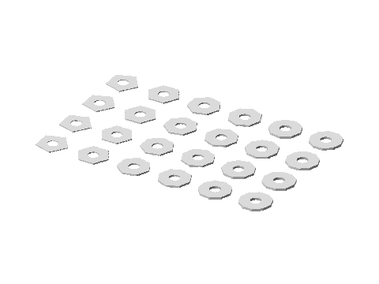
bed-washersBed-levelling washers, 0.5 to 1.0 mm thick, their outlines' sides telling the thickness in tenths: four rows of six.
by Rei

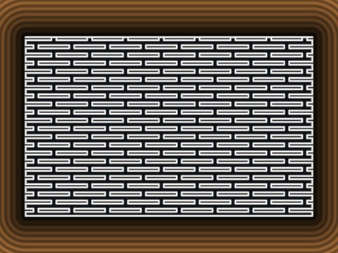
bendy-sheetBendy sheet: a laser-cut plywood sheet with a living hinge across all of it, to bend into a half pipe, and the supports that hold it so.
by Rei

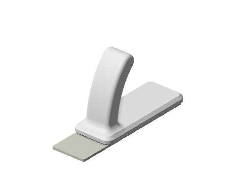
command-strip-hookCommand-strip hook: a flat back for one of 3M's removable adhesive strips and a hook that rises at its tip.
by keycap

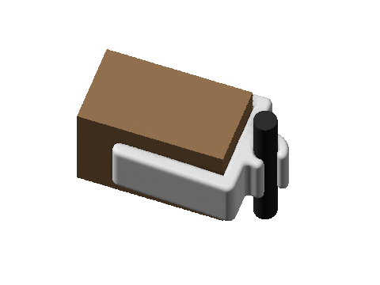
desk-cable-clipDesk cable clip: a clamp that pushes onto a desk's edge, with a ring in front that a cable snaps into, so that a charger's lead waits at the edge instead of falling behind the desk.
by keycap


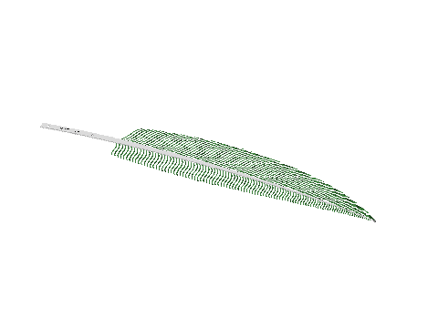
featherA feather the length of a printer bed's diagonal: a tapering stem and two hundred barbs, every one a cubic Bézier curve.
by Rei

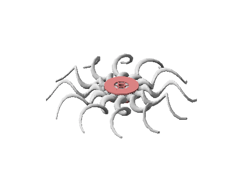
fidget-flowerA fidget flower: twelve spiral petals, each on a cog wheel that meshes with the cogs round a housing, which turns on a printed bearing.
by Rei

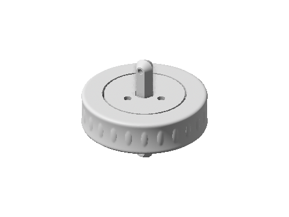
fidget-magneticA magnetic fidget spinner: a printed bearing with a grip round it, on a hexagonal axis with frustums that lock the inner shell and bicone tips, and pairs of magnets in the shells, so that it clicks as it turns.
by Rei


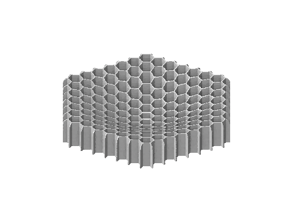
hex-bowlHex bowl: a shallow hexagonal bowl with rounded edges, its floor and walls pierced by a honeycomb of hexagonal holes.
by Rei

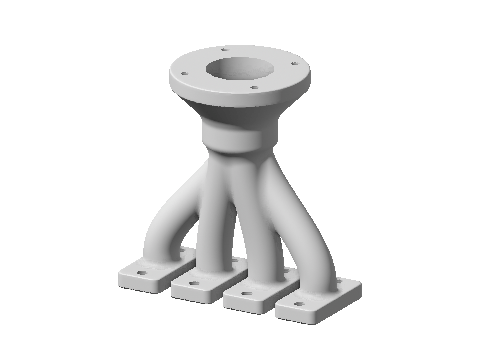
intake-manifoldIntake manifold: four runners from an inline row of ports, merging into one collector with a throttle body's flange on top; hollow, with thin walls.
by keycap

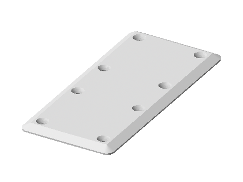
ivar-joinerIKEA IVAR joiner: a plate that screws across the tops of two side-by-side legs.
by Rei

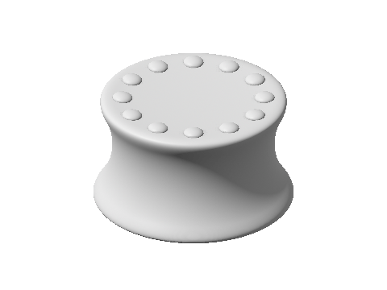
knobKnob: a round handle with a dished top, a waist for the fingers and a ring of bumps for grip.
by Rei

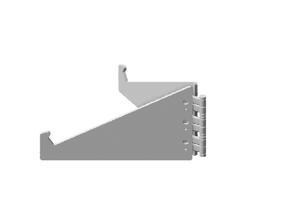
laptop-stand-2Laptop stand, version 2: two laser-cut legs crossed on printed hinges, the hinges' arms rounded.
by Rei

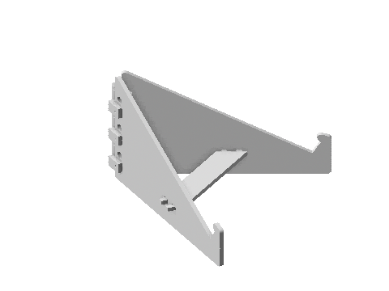
laptop-standLaptop stand: two laser-cut legs crossed on printed hinges, and a lock that holds them open.
by Rei

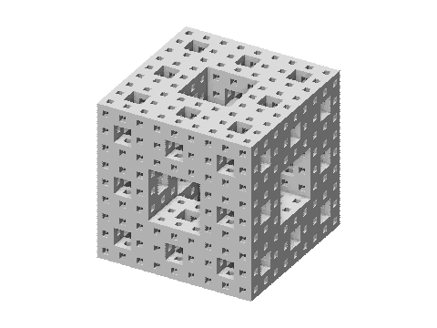
menger-spongeMenger sponge: a cube with a cross cut through it, each of the 20 cubes left a smaller sponge, three levels deep.
by keycap

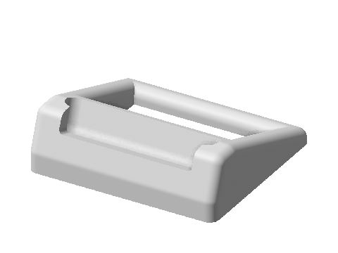
phone-standPhone stand: a tilted prism with a pocket under it and a slot for the phone, every edge rounded.
by Rei

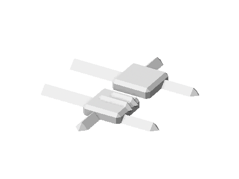
pointerA pointing hand of square prisms and octahedra, split in two halves to print flat side down.
by Rei

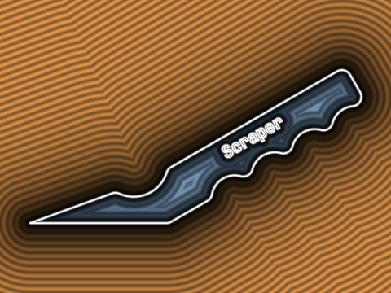
scraperBed scraper: a blade with a sharp tip, a handle with scallops for the fingers and a bite for the thumb, and a label.
by Rei

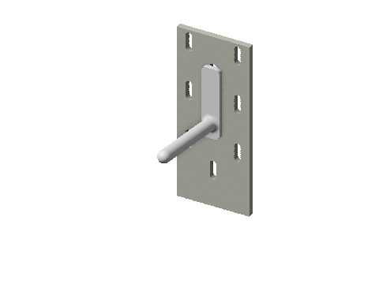
skadis-towel-hookTowel hook for an IKEA SKÅDIS pegboard: two pegs in one column of holes, a back plate and a rod angled up.
by keycap


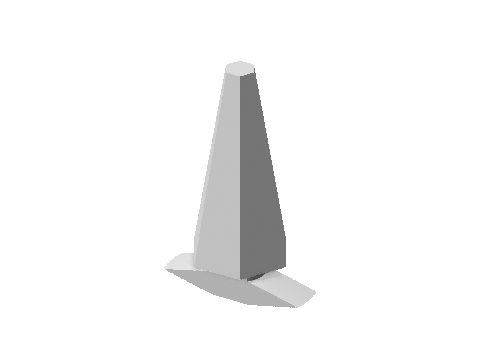
spikeA stud that screws through fabric: a base with a twisted-ellipse thread passes through the fabric's hole and a hexagonal spike screws onto it; two drivers hold the parts while they are screwed together.
by Rei

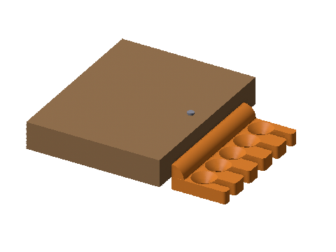
table-cable-hookCable tray for under a table's edge, screwed to the underside, with slots that hold five cables.
by ReiPrintables

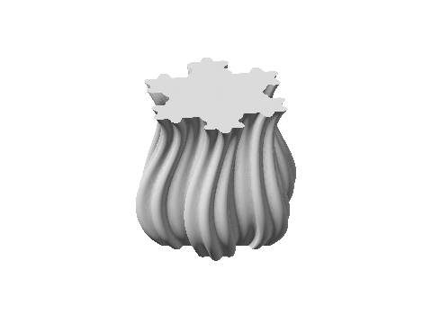
vase-funky-2Funky vase 2: a hexagon with two levels of hexagons at its corners, opened and closed by 3 mm, rising 120 mm while it twists along one Bézier schedule and widens along another.
by Rei

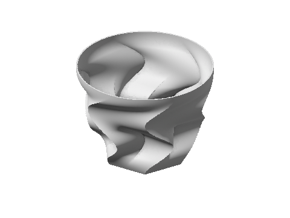
vase-interpolateVase whose outline turns from a hexagon into a hexagram, back, and then into a circle, widening and swaying as it rises.
by Rei


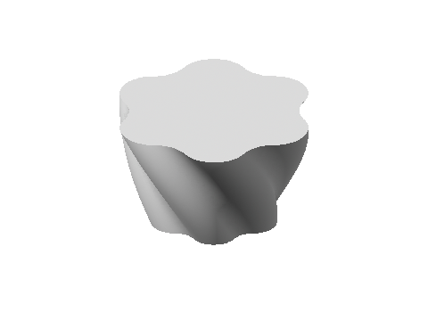
vase-practicalVase on a hexagram rounded both ways, widening and turning a sixth as it rises.
by Rei

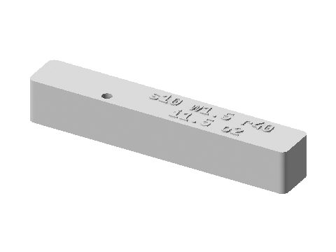
whistleWhistle: a rounded box with a resonator, an air inlet, an outlet in front of the cutting edge and a lanyard hole, its sizes printed on top; with an open end, an L-shaped slider tunes it.
by Rei

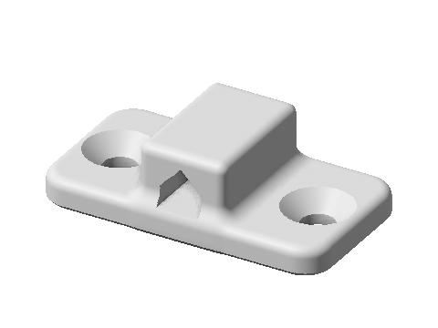
zip-tie-mountZip-tie mount: a base that screws or sticks to a surface, with a bridge for a cable tie to pass under, to hold cables along a wall or a desk.
by keycap
My designs
Made for something specific of mine.
Each is marked with how much of it is drawn with fields, rather than with lists of points as in OpenSCAD:
- sdf-native
- primitives, planes as distances and their combinations; points only as data, such as an outline of the original’s numbers, an imported drawing or a font’s glyphs, or to work out a number.
- mixed
- fields, with an outline worked out on points by
keycap/pointswhere planes or primitives would draw it. - point-based
- the shape itself is worked out on points when the script loads, then made a field.
Two of the ports have a rewrite with fields on their page, since drawing them so changed their shape. For nix it pays: a seventh of the nodes and under half the export time, for corners up to 0.16 mm off, less than half a 0.4 mm nozzle’s width. For steam_deck_dpad it doesn’t: keycap already draws the buttons’ convex pentagon about as cheaply as planes, so the rewrite saves a tenth of the render, and moves their corners by 0.24 mm. The brooch stays on points, as its plate is the logo’s closing by a disc, and a field has no closing.
Keycaps
My keycaps.
The designs share a library, keycap.rhai, which each of them imports.

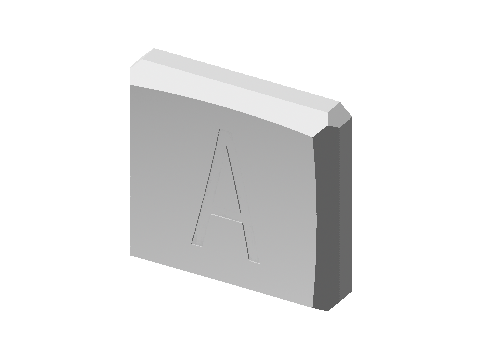
cryptodancerA flat cap for the cryptodancer keyboard's Kailh Choc v1 switches: a chamfered hat with a shallow spherical dish, a legend cut into the dish, and a bar for the homing keys.
by Reisdf-native

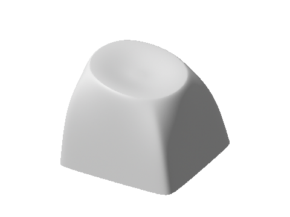
mxA sculpted MX keycap: a squircle base easing into a rounder, tilted pad with a dish, a 1 mm shell, a cross stem with ribs to the walls, posts that count the row, and an optional homing bump and 2u stretch.
by Reisdf-native

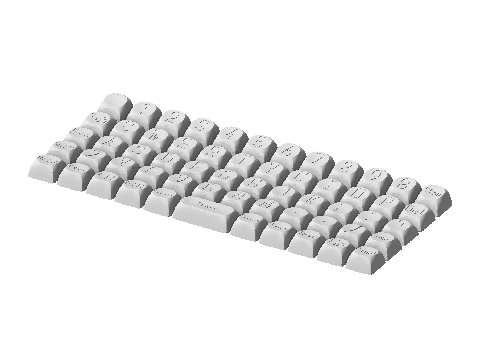
preonicSculpted MX keycaps on an OLKB Preonic, with the legends of QMK's default keymap.
by Reisdf-native
Cryptodancer

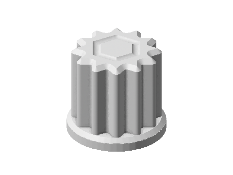
knobKnob for an EC11 rotary encoder: four turned triangles, chamfered all round, with a hexagon of grooves on top.
by Reisdf-native

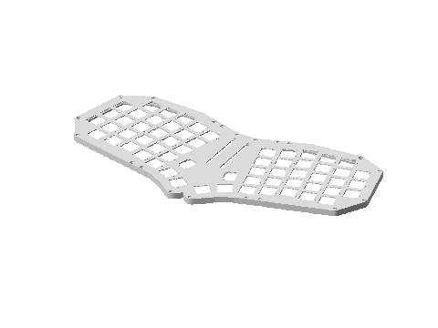
plateThe Cryptodancer keyboard's plate, the wall round its board and the back frame, from the board's KiCad drawings, held together by M2 screws in heat-set inserts, and cut into parts that fit a printer.
by Reisdf-native
Earrings

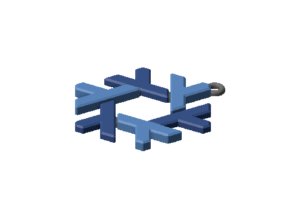
nixNixOS snowflake earring: six lambdas in two colours and thicknesses round a hexagonal ring, their top edges chamfered, with a jump ring.
by Reipoint-based and sdf-native
Fabric

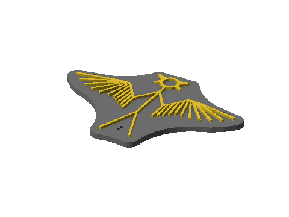
bag-broochBrooch for a bag: a bird drawn in strokes, raised on a plate that follows its outline.
by Reipoint-based
Mods

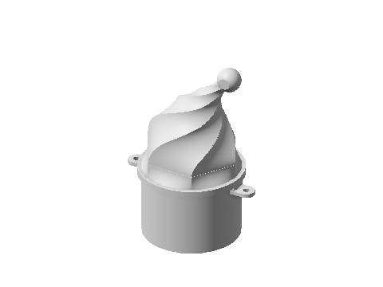
car_Phone mount that replaces an air vent in a Mazda MX-5 and holds a magnetic ring with a ball joint: a base with ears that screws to a back cylinder, a short rise from circle to hexagon, then a swirl, a hexagon that shrinks and turns half a turn as it bends 45 degrees round a far pivot, to a ball.
by Reisdf-native

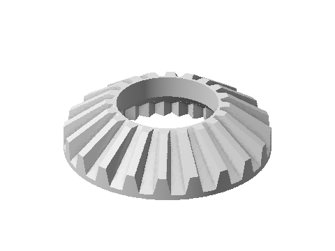
singer720_Replacement hook drive gear for a Singer 720 sewing machine: a ring of 20 outer teeth on a revolved body, and a 27-tooth spline in its bore.
by Reisdf-native

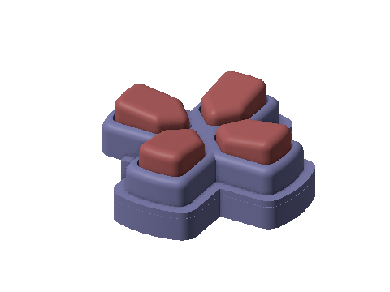
steam_Replacement Steam Deck d-pad: a cross in a circle, rounded on top, with a rim and a support underneath, and four slanted buttons that sit in it on the console's domes.
by ReiPrintablesmixed and sdf-native
Printer

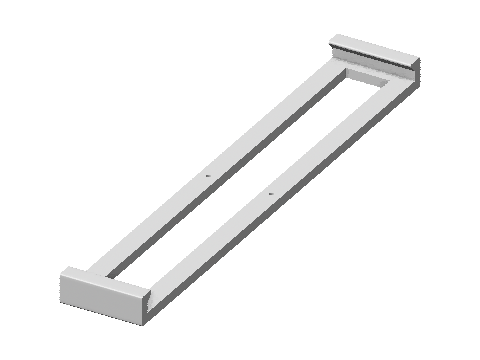
accelerometer-holderAccelerometer holder for a printer bed: a clip that hooks over both edges of the bed, with heat-set inserts for the sensor board.
by Reisdf-native